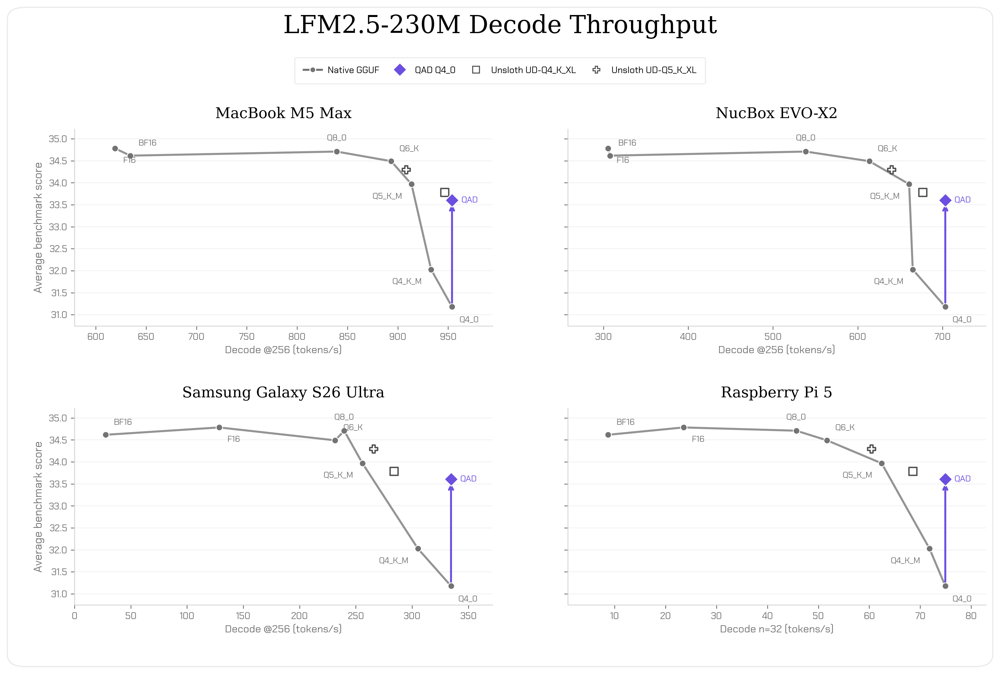
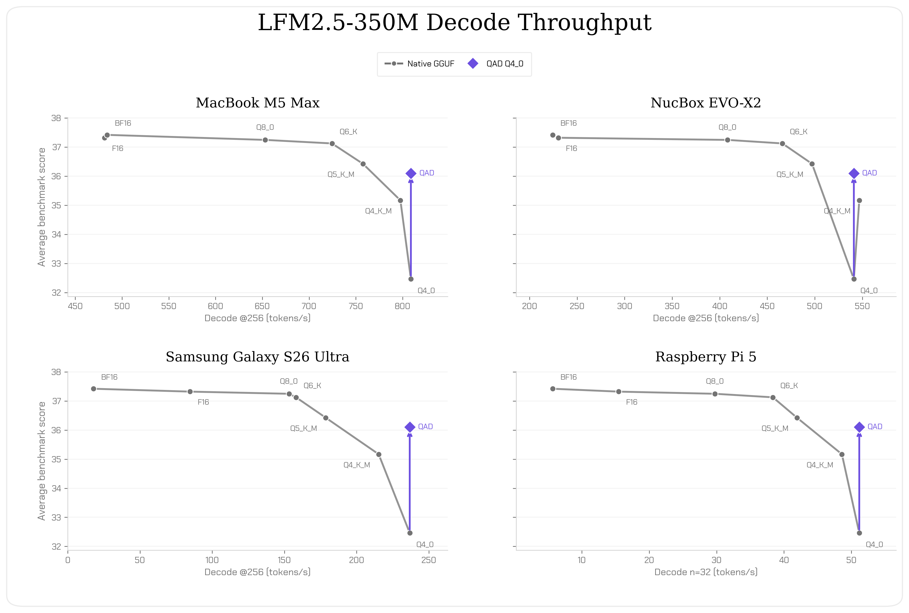
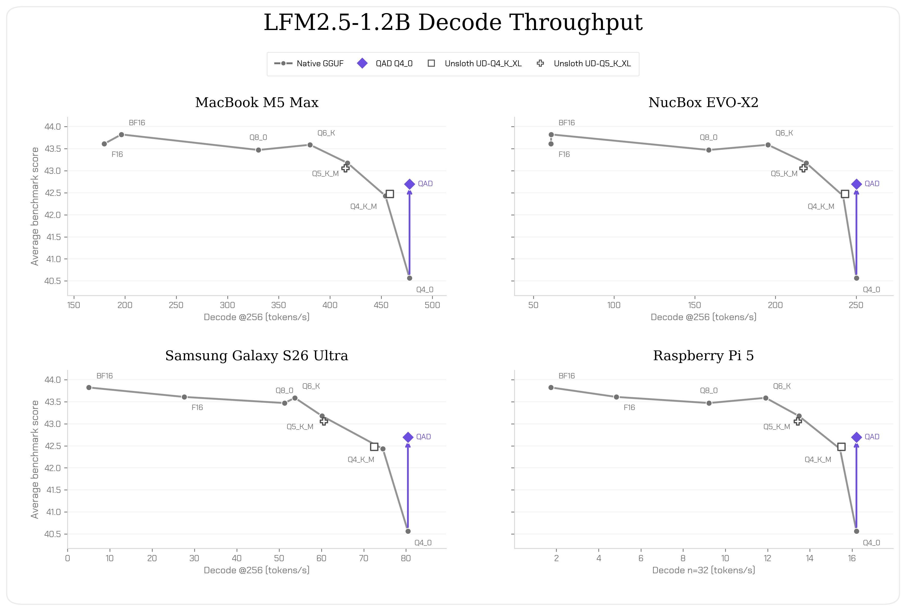
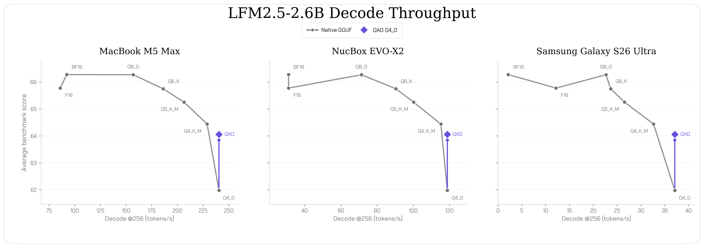

文章背景与核心概要
本文介绍了 Liquid AI 针对 LFM2.5 模型系列（包括 230M、350M、1.2B-Instruct 和 2.6B）全新发布的 QAD Q4_0 GGUF 检查点。通过采用量化感知蒸馏（QAD）技术——即将高精度教师模型的知识蒸馏至量化学生模型中——这些更新后的 4 位检查点恢复了标准量化过程中通常会损失的约 97% 的 BF16 平均准确率，同时保留了原生 Q4_0 GGUF 极小的内存占用和高吞吐量优势。
这一技术突破使得开发者能够在各类真实边缘硬件（如 MacBook Pro、NucBox、三星 Galaxy 手机及树莓派 5）上运行模型时，既能享受极致的速度与低内存开销，又不会遭遇传统量化带来的质量下降问题。
LFM2.5 Q4_0 Checkpoints from Quantization-Aware Distillation
Published: August 19, 2026 by Aditya Tadimeti and Leonie Monigatti (Liquid AI)
📌 Executive Summary
Liquid AI has released new QAD Q4_0 GGUF checkpoints for the LFM2.5 model family (
230M,350M,1.2B-Instruct, and2.6B). Utilizing Quantization-Aware Distillation (QAD)—where a high-precision teacher model is distilled into a quantized student model—these updated 4-bit checkpoints recover approximately 97% of the BF16 average accuracy typically lost during standard quantization, while maintaining the minimal memory footprint and high throughput of nativeQ4_0GGUFs.
概述
Liquid AI 今日发布了全新的 QAD Q4_0 GGUF 检查点。这些是针对 LFM2.5-230M、LFM2.5-350M、LFM2.5-1.2B-Instruct 和 LFM2.5-2.6B 的更新版 4 位检查点。它们允许开发者在运行 LFM2.5 模型时享受 Q4_0 的内存占用和运行速度，同时避免了通常的质量下降：
- 使用量化感知蒸馏（QAD）训练：将高精度教师模型的知识蒸馏到量化学生模型中。
- 与原生 Q4_0 相同的内存和速度：保持了 Q4_0 GGUF 极低的内存占用和高吞吐量。
- 准确率恢复：恢复了因量化而损失的 BF16 平均准确率的 97%。
Today, we release QAD Q4_0 GGUFs. These are updated 4-bit checkpoints for LFM2.5-230M, LFM2.5-350M, LFM2.5-1.2B-Instruct, and LFM2.5-2.6B. They allow developers to run LFM2.5 models at Q4_0 memory and speed without the usual quality drop:
- Trained with Quantization-Aware Distillation (QAD): A high-precision teacher model is distilled into a quantized student model.
- Same memory and speed as native Q4_0: They keep the low memory footprint and high throughput of Q4_0 GGUFs.
- Accuracy Recovery: 97% of their BF16 average accuracy lost to quantization is recovered.
基准测试结果
对于所有四个模型，我们在涵盖推理、遵循指令、工具使用和智能体能力的基准测试套件（GPQA Diamond、MMLU-Pro、IFEval、IFBench、Multi-IF 和 BFCLv4）上，将通过训练后量化（PTQ）生成的 GGUF 与训练好的 QAD Q4_0 检查点进行了对比。BF16 GGUF 用作格式内的性能上限。
我们还针对不同规模添加了一项相匹配的数学评估：针对 LFM2.5-230M 和 LFM2.5-350M 使用 GSM8K，针对 LFM2.5-1.2B-Instruct 和 LFM2.5-2.6B 使用 AIME25。我们报告了五次重复测试的平均值。
{kind=link}
在所有四个模型中，QAD 显着改善了 Q4_0 检查点。 QAD 检查点分别保留了其对应 BF16 基线性能的 97.1%、96.5%、97.4% 和 96.6%。
For all four models, we compare their released GGUFs produced with post-training quantization (PTQ) against the trained QAD Q4_0 checkpoints on a benchmark suite spanning reasoning, instruction-following, tool use, and agentic capabilities: GPQA Diamond, MMLU-Pro, IFEval, IFBench, Multi-IF, and BFCLv4. The BF16 GGUF serves as the in-format ceiling.
We also add one scale-appropriate math evaluation: GSM8K for LFM2.5-230M and LFM2.5-350M, and AIME25 for LFM2.5-1.2B-Instruct and LFM2.5-2.6B. We report the mean across five repeats.
Across all four models, QAD substantially improves the Q4_0 checkpoint. The QAD checkpoints retain 97.1%, 96.5%, 97.4%, and 96.6% of their respective BF16 baseline performance.
真实边缘硬件上的速度与尺寸
我们在四个目标平台上测量了四个模型的解码吞吐量：MacBook Pro、NucBox EVO-X2、三星 Galaxy S26 Ultra 和 树莓派 5（Raspberry Pi 5）。MacBook Pro 和 NucBox 使用 GPU 推理，而三星和树莓派使用 Arm CPU 推理。BF16 和 F16 在有评测的情况下显示为全精度参考。
   
{kind=link}
{kind=link}
{kind=link}
{kind=link}
- 230M 和 350M QAD Q4_0 检查点在评估方差范围内匹配了
Q5_K_M的质量，同时解码吞吐量提高了 4–33%。 - 1.2B 和 2.6B QAD Q4_0 检查点在高出 3–14% 的吞吐量下匹配了
Q4_K_M的质量。 - QAD Q4_0 检查点还匹配了 Unsloth 的
UD-Q4_K_XL（适用于 230M 和 1.2B 模型，如果适用），这是一个表现出色的外部训练后量化检查点。
We measure decode throughput for the four models across four targets: MacBook Pro, NucBox EVO-X2, Samsung Galaxy S26 Ultra, and Raspberry Pi 5. MacBook Pro and NucBox use GPU inference, while Samsung and Raspberry Pi use Arm CPU inference. BF16 and F16 are shown as full-precision references where profiled.
- The 230M and 350M QAD Q4_0 checkpoints match
Q5_K_Mquality within evaluation variance at a 4–33% higher decode throughput.- The 1.2B and 2.6B QAD Q4_0 checkpoints match
Q4_K_Mquality at a 3–14% higher throughput.- The QAD Q4_0 checkpoints also match Unsloth's
UD-Q4_K_XL(where applicable, for the 230M and 1.2B), a strong external post-training quantization checkpoint.
如何使用 QAD GGUF
请结合 llama.cpp 或任何支持 GGUF Q4_0 制品的运行时使用这些文件。
llama-cli -hf LiquidAI/LFM2.5-350M \
--hf-file LFM2.5-350M-QAD-Q4_0.gguf \
-p "What is C. elegans?"
How to Use QAD GGUFs
Use the files with
llama.cppor any runtime that supports GGUF Q4_0 artifacts.llama-cli -hf LiquidAI/LFM2.5-350M \ --hf-file LFM2.5-350M-QAD-Q4_0.gguf \ -p "What is C. elegans?"
快速上手 QAD GGUF
QAD GGUF 现已在 Hugging Face 上线： * LFM2.5-230M * LFM2.5-350M * LFM2.5-1.2B-Instruct * LFM2.5-2.6B
我们迫不及待地想看到您的精彩创作。
Get Started with QAD GGUFs
The QAD GGUFs are available on Hugging Face today: * LFM2.5-230M * LFM2.5-350M * LFM2.5-1.2B-Instruct * LFM2.5-2.6B
We can't wait to see what you build.
引用
如需引用，请使用以下参考信息或 BibTeX：
Liquid AI, "LFM2.5 Q4_0: Quantization-Aware Distillation for Edge Deployment", Liquid AI Blog, Aug 2026.
@article{liquidAI2026Q40,
author = {Liquid AI},
title = {LFM2.5 Q4_0: Quantization-Aware Distillation for Edge Deployment},
journal = {Liquid AI Blog},
year = {2026},
note = {www.liquid.ai/blog/qad},
}
Citation
For citations, please use the following reference or BibTeX:
Liquid AI, "LFM2.5 Q4_0: Quantization-Aware Distillation for Edge Deployment", Liquid AI Blog, Aug 2026.@article{liquidAI2026Q40, author = {Liquid AI}, title = {LFM2.5 Q4_0: Quantization-Aware Distillation for Edge Deployment}, journal = {Liquid AI Blog}, year = {2026}, note = {www.liquid.ai/blog/qad}, }